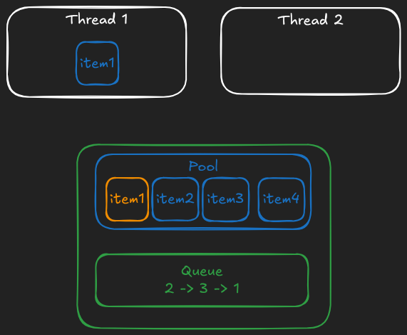
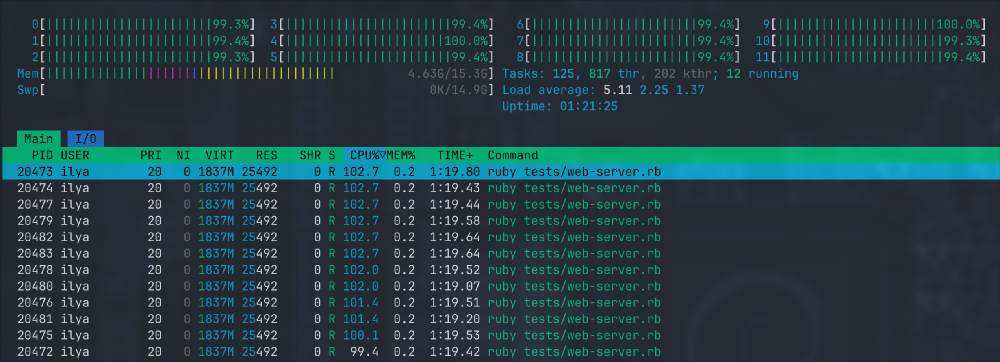

Intro
This story is about concurrent data structures in the context of Ruby. The goal here is to demonstrate how true parallelism can be achieved with global mutable state (which at the time of writing, is not supported by built-in Ruby primitives).
Familiarity with Ruby, Rust, C, (and a bit of other tooling) is nice to have, but hopefully not mandatory.
The repository with code examples can be found on GitHub, to run it you need a relatively new version of Ruby (master branch is probably the best option if you can compile it locally), Rust and C compilers.
Ractors, what and why
A bit of history first (I promise, there will be code, a lot, soon). Ruby had threads for a really long time, but they are ... not quite parallel. That's right, Thread class in Ruby is a native thread under the hood (POSIX thread on Linux to be more specific, using pthread_* and friends) but in order to evaluate any instructions, a thread needs to acquire what's called the Global Interpreter Lock (or GIL). The consequence is obvious: only one thread can evaluate code at any point in time.
There has always been one good exception: I/O-related work and only if it's cooked "right". There are C APIs in Ruby that allow you to call your C function (let's say something like sql_adapter_execute_query) without acquiring the lock. Then, once the function returns, the lock is acquired again. If this API is used you can do I/O in parallel.
To sum up, in the world of Threads
- you can do I/O in parallel (like reading files)
- you can't do CPU-bound computations in parallel (like calculating Fibonacci numbers)
But things changed after Ruby 3.0 was released in 2020, now we have a new building brick called Ractor. Ractors are also implemented using threads internally but each Ractor has its own GIL. It was a very promising moment of "hey, we can have true multi-threaded parallel apps now!". As always there was a catch.
Ruby objects have no internal synchronization logic, so if Ractor A pushes to an array and so does Ractor B then... nobody knows what's going to happen; it's a race condition. At best, it crashes, at worst one push overwrites the other, and something weird starts happening. Fixing it requires wrapping every single object with a mutex or forbidding access to the same object from multiple threads. The solution was somewhere in the middle: you can only share objects but only if they are deeply frozen (there's a special Ractor.make_shareable API specifically for that). And don't get me wrong, I think it's a good compromise.
So now you can do computations in parallel if they don't share any mutable data which sounds like a HUGE limitation for real-world apps. Just off the top of my head, things that I'd like to have:
- a global queue of requests (main thread accepts incoming connections and pushes them to the queue. Worker threads poll the queue and process requests.)
- a global pool of objects (to store database connections)
- a global data structure to store metrics
- a global in-memory cache for things that change rarely but are needed everywhere (e.g. dynamic app configuration)
Calling require in a non-main Ractor wasn't possible before the latest version of Ruby (because it mutates shared global variable $LOADED_FEATURES), but now it's doable by sending a special message to the main Ractor that does require and waiting until it's done (remember, the main Ractor can mutate anything; otherwise it would be the biggest breaking change in the history of programming languages), and then it responds back to Ractor that asked for it so that it can continue its execution loop.
What's wrong with forking
Without truly parallel threads a common option was (and de-facto is) to use fork. It works but it comes with its own set of problems:
- child processes share some memory with their parent, but only if the actual memory hasn't been changed by a child. Any attempt to modify it on the child level makes the OS create a copy of the page that is about to change, copy the content from parent to child, and then apply changes there. In practice it means that if your app does a lot of lazy initialization then most probably you'll not share much memory. With threads nothing has to be copied
- you can't have any shared global state unless you use shared memory object API which is not easy to get right. If you absolutely must track some global progress then you have to introduce some IPC (e.g. via
socketpair) which is not trivial. With threads everything can be shared and no additional abstraction is needed
Not a long time ago there was a series of interesting articles that mentioned Ractors in multiple places. One significant thing that I learned from it is that when you
forkyou can't share many internal data structures that are filled by Ruby under the hood. For example, inline method caches that are used to speed up method lookup. These caches depend on your runtime behaviour, and since each child process has its own flow they end up having different caches that are filled differently and in different order. This makes the OS to copy all pages that contain them.
Side note: do you remember a thing called "REE" (Ruby Enterprise Edition)? It was an "optimized" version of Ruby in pre-2.0 era. One of its key features was "copy-on-write friendly GC" that was about storing bitflags for marked objects not in the object itself but in a separate centralized place. Then, when GC runs, it would only change those "externally" stored bits instead of modifying objects. This way each process only has to copy this table of flags instead of copying the entire heap. By the way, from what I know these patches have been backported to Ruby in 2.0.
Ruby heap
After reading the previous section you might be under the impression that it's easier to think about Ruby heap as if there was a single "shared" heap full of frozen objects and a bunch of per-Ractor heaps that are mutable if you access it from the Ractor that owns it. Yes, maybe it's easier, but in reality, it's still a single heap, and every object is accessible by every Ractor.
o = Object.new
Ractor.make_shareable(o)
ID = o.object_id
puts "[MAIN] #{ID} #{o}"
r = Ractor.new do
o2 = ObjectSpace._id2ref(ID)
puts "[NON-MAIN] #{ID} #{o2}"
Ractor.yield :done
end
r.take
This code prints
[MAIN] 5016 #<Object:0x00007f97f72523a8>
[NON-MAIN] 5016 #<Object:0x00007f97f72523a8>
which proves the statement above. However, removing the line Ractor.make_shareable(o) breaks the code with an error "5016" is id of the unshareable object on multi-ractor (RangeError) (By the way, why is it a RangeError?).
How can we make an object shareable (i.e. deeply frozen) but still mutable? Well, we can attach data on the C level to this object and make it mutable.
Side note: concurrent access is still possible
The snippet above requires calling Ractor.make_shareable because we use built-in Ruby methods, but what if we define our own functions?
// Converts given `obj` to its address
VALUE rb_obj_to_address(VALUE self, VALUE obj) { return LONG2NUM(obj); }
// Converts given address back to the object
VALUE rb_address_to_obj(VALUE self, VALUE obj) { return NUM2LONG(obj); }
// and then somewhere in the initialization logic
rb_define_global_function("obj_to_address", rb_obj_to_address, 1);
rb_define_global_function("address_to_obj", rb_address_to_obj, 1);
We defined two functions:
irb> o = "foo"
=> "foo"
irb> obj_to_address(o)
=> 140180443876200
irb> obj_to_address(o)
=> 140180443876200
irb> address_to_obj(obj_to_address(o))
=> "foo"
Let's see if the hack works:
require_relative './helper'
o = Object.new
ADDRESS = obj_to_address(o)
puts "[MAIN] #{ADDRESS} #{o}"
r = Ractor.new do
o2 = address_to_obj(ADDRESS)
puts "[NON-MAIN] #{ADDRESS} #{o2}"
Ractor.yield :done
end
r.take
prints
[MAIN] 140194730661200 #<Object:0x00007f81a11ed550>
[NON-MAIN] 140194730661200 #<Object:0x00007f81a11ed550>
Of course doing this without adding any thread-safe wrappers is simply wrong. For example, the following snippet causes segfault:
require_relative './helper'
array = []
ADDRESS = obj_to_address(array)
ractors = 2.times.map do\
# 2 threads
Ractor.new do
obj = address_to_obj(ADDRESS)
# each mutates a shared non-thread-safe array
1_000_000.times do
obj.push(42)
obj.pop
end
Ractor.yield :done
end
end
p ractors.map(&:take)
Counter, the wrong way
I'm going to write all data structures here in Rust, and then wrap them with C.
Here's the wrong, non-thread-safe counter struct:
#![allow(unused)] fn main() { #[derive(Debug)] pub struct PlainCounter { value: u64, } impl PlainCounter { // exposed as `PlainCounter.new` in Ruby pub fn new(n: u64) -> Self { Self { value: n } } // exposed as `PlainCounter#increment` in Ruby pub fn increment(&mut self) { self.value += 1; } // exposed as `PlainCounter#read` in Ruby pub fn read(&self) -> u64 { self.value } } }
There's no synchronization internally, and so calling increment from multiple threads is simply wrong.
By the way, you can't mutate it from multiple threads in Rust too. It simply won't compile.
Then, we need some glue code to expose these methods to C.
#![allow(unused)] fn main() { #[no_mangle] pub extern "C" fn plain_counter_init(counter: *mut PlainCounter, n: u64) { unsafe { counter.write(PlainCounter::new(n)) } } #[no_mangle] pub extern "C" fn plain_counter_increment(counter: *mut PlainCounter) { let counter = unsafe { counter.as_mut().unwrap() }; counter.increment(); } #[no_mangle] pub extern "C" fn plain_counter_read(counter: *const PlainCounter) -> u64 { let counter = unsafe { counter.as_ref().unwrap() }; counter.read() } pub const PLAIN_COUNTER_SIZE: usize = 8; }
Why do we need size? That's a part of the C API that we'll use in a moment. Ruby will own our struct, and so it must know its size (but for some reason it doesn't care about alignment, I guess because it always places it at an address that is a multiple of 16 bytes?)
Then we call bindgen to generate C headers with 3 functions and one constant.
// rust-atomics.h
// THIS CODE IS AUTO-GENERATED
#define PLAIN_COUNTER_SIZE 8
typedef struct plain_counter_t plain_counter_t;
void plain_counter_init(plain_counter_t *counter, uint64_t n);
void plain_counter_increment(plain_counter_t *counter);
uint64_t plain_counter_read(const plain_counter_t *counter);
As you can see we don't even expose internal structure of the plain_counter_t, only its size.
Then we can finally write C extension:
// c_atomics.c
#include <ruby.h>
#include "plain-counter.h"
RUBY_FUNC_EXPORTED void Init_c_atomics(void) {
rb_ext_ractor_safe(true);
VALUE rb_mCAtomics = rb_define_module("CAtomics");
init_plain_counter(rb_mCAtomics);
}
c_atomics is the main file of our extension:
- first, it calls
rb_ext_ractor_safewhich is absolutely required if we want to call functions defined by our C extension from non-main Ractors - then, it declares (or re-opens if it's already defined) a module called
CAtomics - and finally it calls
init_plain_counterthat is defined in a fileplain-counter.h(see below)
// plain-counter.h
#include "rust-atomics.h"
#include <ruby.h>
const rb_data_type_t plain_counter_data = {
.function = {
.dfree = RUBY_DEFAULT_FREE
},
.flags = RUBY_TYPED_FROZEN_SHAREABLE
};
VALUE rb_plain_counter_alloc(VALUE klass) {
plain_counter_t *counter;
TypedData_Make_Struct0(obj, klass, plain_counter_t, PLAIN_COUNTER_SIZE, &plain_counter_data, counter);
plain_counter_init(counter, 0);
VALUE rb_cRactor = rb_const_get(rb_cObject, rb_intern("Ractor"));
rb_funcall(rb_cRactor, rb_intern("make_shareable"), 1, obj);
return obj;
}
VALUE rb_plain_counter_increment(VALUE self) {
plain_counter_t *counter;
TypedData_Get_Struct(self, plain_counter_t, &plain_counter_data, counter);
plain_counter_increment(counter);
return Qnil;
}
VALUE rb_plain_counter_read(VALUE self) {
plain_counter_t *counter;
TypedData_Get_Struct(self, plain_counter_t, &plain_counter_data, counter);
return LONG2FIX(plain_counter_read(counter));
}
static void init_plain_counter(VALUE rb_mCAtomics) {
VALUE rb_cPlainCounter = rb_define_class_under(rb_mCAtomics, "PlainCounter", rb_cObject);
rb_define_alloc_func(rb_cPlainCounter, rb_plain_counter_alloc);
rb_define_method(rb_cPlainCounter, "increment", rb_plain_counter_increment, 0);
rb_define_method(rb_cPlainCounter, "read", rb_plain_counter_read, 0);
}
Here we:
- Declare metadata of the native data type that will be attached to instances of our
PlainCounterRuby class- It has default deallocation logic that does nothing (because we don't allocate anything on creation)
- It's marked as
RUBY_TYPED_FROZEN_SHAREABLE, this is required or otherwise we'll get an error if we callRactor.make_shareableon it
- Then there's an allocating function (which basically is what's called when you do
YourClass.allocate):- It calls
TypedData_Make_Struct0macro that defines anobjvariable (the first argument) as an instance ofklass(second argument) with data of typeplain_counter_tthat has sizePLAIN_COUNTER_SIZE(the one we generated withbindgen) and has metadataplain_counter_data. The memory that is allocated and attached toobjis stored in the givencounterargument. - Then we call
plain_counter_initwhich goes to Rust and properly initializes our struct withvalue = 0 - Then it makes the object Ractor-shareable literally by calling
Ractor.make_shareable(obj)but in C. - And finally it returns
obj
- It calls
rb_plain_counter_incrementandrb_plain_counter_readare just wrappers around Rust functions on the native attached data.- Finally
init_plain_counterfunction defines aPlainCounterRuby class, attaches an allocating function and defines methodsincrementandread.
Does this work?
First, single-threaded mode to verify correctness:
require 'c_atomics'
counter = CAtomics::PlainCounter.new
1_000.times do
counter.increment
end
p counter.read
# => 1000
Of course it works. Let's try multi-Ractor mode:
require 'c_atomics'
COUNTER = CAtomics::PlainCounter.new
ractors = 5.times.map do
Ractor.new do
1_000.times { COUNTER.increment }
Ractor.yield :completed
end
end
p ractors.map(&:take)
# => [:completed, :completed, :completed, :completed, :completed]
p COUNTER.read
# => 2357
That's a race condition, GREAT! Now we understand that it's possible to have objects that are shareable on the surface but mutable inside. All we need is to guarantee that internal data structure is synchronized and the key trick here is to use mutexes, atomic variables and lock-free data structures.
If you have some experience with Rust and you heard about lock-free data structures it might sound similar to you. Lock-free data structures have the same interface in Rust: they allow mutation through shared references to an object, like this:
#![allow(unused)] fn main() { struct LockFreeQueue<T> { // ... } impl LockFreeQueue<T> { fn push(&self, item: T) { // ... } fn pop(&self) -> Option<T> { // ... } } }
Atomics
SPOILER: I'm not an expert in this area and if you are really interested in learning how atomics work better read something else.
If you are comfortable with Rust I would personally recommend "Rust Atomics and Locks" by Mara Bos
I'll do my best to explain what I know but please take it with a grain of salt.
When I say "atomics" I mean atomic variables. In Rust there's a set of data types representing atomic variables, e.g. std::sync::atomic::AtomicU64. They can be modified using atomic operations like fetch_add and compare_and_swap and the change that happens is always atomic.
Internally they rely on a set of special CPU instructions (or rather a special lock instruction prefix):
#![allow(unused)] fn main() { #[no_mangle] pub fn add_relaxed(n: std::sync::atomic::AtomicU64) -> u64 { n.fetch_add(1, std::sync::atomic::Ordering::Relaxed) } }
becomes
add_relaxed:
mov qword ptr [rsp - 8], rdi
mov eax, 1
lock xadd qword ptr [rsp - 8], rax
ret
Of course it's possible to load and store them as well. However, you might've noticed that there's a special argument called "memory ordering" that needs to be passed. Rust follows C++ memory model which is not the only one but I think it's the most popular model as of now.
The problem with both modern compilers and CPUs (well, in fact, it's a feature) is that they can re-order instructions if they think that it makes the code run faster, but it can also produce a race condition.
The idea is that for each atomic operation that you perform you need to additionally pass a special enum flag that is one of:
relaxed
That's the "weakest" requirement for the CPU. This mode requires no synchronization and allows any kind of re-ordering. It's the fastest type of atomic operation and it's very suitable for things like counters or just reads/writes where order doesn't matter, or when you only care about the final result. This is what we are going to use in the next chapter to implement correct atomic counter.
acquire/release
I'm going to quote C++ documentation here:
A load operation with
acquirememory order performs the acquire operation on the affected memory location: no reads or writes in the current thread can be reordered before this load. All writes in other threads that release the same atomic variable are visible in the current thread.
A store operation with
releasememory order performs the release operation: no reads or writes in the current thread can be reordered after this store. All writes in the current thread are visible in other threads that acquire the same atomic variable and writes that carry a dependency into the atomic variable become visible in other threads that consume the same atomic.
If it sounds complicated you are not alone. Here's a nice example from C++:
std::atomic<std::string*> ptr;
int data;
void producer()
{
std::string* p = new std::string("Hello");
data = 42;
ptr.store(p, std::memory_order_release);
}
void consumer()
{
std::string* p2;
while (!(p2 = ptr.load(std::memory_order_acquire)))
;
assert(*p2 == "Hello"); // never fires
assert(data == 42); // never fires
}
int main()
{
std::thread t1(producer);
std::thread t2(consumer);
t1.join(); t2.join();
}
Here when we call store(release) in producer it's guaranteed that any other threads that loads the value using load(acquire) will see the change to the underlying value (a string) together with other changes made by the writing thread (int data).
This synchronization primitive might look unusual to you if you have never seen it before, but the idea is simple: this memory ordering level guarantees that all of your changes made in one thread become visible to other thread in one go.
seq_cst
Stands for "Sequentially Consistent" ordering.
A load operation with
seq_cstmemory order performs an acquire operation, a store performs a release operation, and read-modify-write performs both an acquire operation and a release operation, plus a single total order exists in which all threads observe all modifications in the same order.
That's the strongest level of "consistency" and also the slowest.
It all looks similar to transactional databases, right?
Kind of, there's something in common:
| Memory Ordering | Database Isolation Level |
|---|---|
| Relaxed | Uncommitted |
| Acquire/Release | Repeatable Read |
| Sequential | Serializable |
But in my opinion it's better NOT to think of atomics in terms of databases. Levels of memory ordering aim to represent how instructions can/cannot be reordered and what happens-before or happens-after what.
Counter, the right way
Okay, at this point we know that instead of a plain integer we need to use an atomic int and we should use Ordering::Relaxed to fetch_add and load it.
Starting from this section, I'll omit the part with C functions, instead there will be only comments like "Exposed as XXX in Ruby"
use std::sync::atomic::{AtomicU64, Ordering};
#[derive(Debug)]
pub struct AtomicCounter {
value: AtomicU64,
}
impl AtomicCounter {
// Exposed as `AtomicCounter.new` in Ruby
pub fn new(n: u64) -> Self {
Self {
value: AtomicU64::new(n),
}
}
// Exposed as `AtomicCounter#increment` in Ruby
pub fn increment(&self) {
self.value.fetch_add(1, Ordering::Relaxed);
}
pub fn read(&self) -> u64 {
self.value.load(Ordering::Relaxed)
}
}
The main question is "does it actually work?". First, single-threaded code
require 'c_atomics'
counter = CAtomics::AtomicCounter.new
1_000.times do
counter.increment
end
p counter.read
# => 1000
Great, it works. Time for multi-threaded code:
require 'c_atomics'
COUNTER = CAtomics::AtomicCounter.new
ractors = 5.times.map do
Ractor.new do
1_000.times { COUNTER.increment }
Ractor.yield :completed
end
end
p ractors.map(&:take)
# => [:completed, :completed, :completed, :completed, :completed]
p COUNTER.read
# => 5000
Isn't it great?
Containers, Ractors, and GC
Remember: we are here to build concurrent data structures, not just plain counters. What are containers in high-level programming languages with managed memory? They are still "normal" containers that hold references to other objects, in other words an array of data objects is not a blob of memory with objects located one after another, it's a blob of pointers to those objects.
Objects in Ruby are represented using VALUE type which is just an unsigned long C type that is a 64-bit unsigned integer. In fact it's a tagged pointer where top bits define what is this VALUE and low bits represent the actual value.
Just like in other interpreted languages small integers, true, false, nil and some other values are represented with a special pattern of bits that can be checked using special macros FIXNUM_P, NIL_P and others. Also it means that "not every object in Ruby is passed by reference" but that's a separate topic.
So an object that we want to store in our containers is a number, std::ffi::c_ulong to be more specific. Ok, sounds good so far, but two questions immediately pop into my head.
1. Can we have containers that allow us to temporarily get a reference to stored objects?
Here's an example:
COLLECTION = SomeThreadSafeStruct.new
r1 = Ractor.new { COLLECTION.get(key).update(value) }
r2 = Ractor.new { COLLECTION.get(key).update(value) }
This is basically a race condition. I see two options:
- we can definitely have data structures that DON'T allow "borrowing" of any value from the inside. An example of such data structure would be a queue,
.push(value)"moves" the value to the queue and nobody else in this thread can access it anymore..pop"moves" the value from the queue back to the user code. This way we can guarantee that only one thread accesses each element at any point in time. Unfortunately there's no way to enforce it but it could be done safely on the level of a single library that uses this queue internally. - we can definitely have data structures that only store other concurrent values, then we can safely "borrow" them
For 1 here's a rough equivalent of the code:
QUEUE = SafeQueue.new
N.times do
Ractor.new do
process(QUEUE.pop)
end
end
DATA.each do |value|
QUEUE.push(value)
end
# However you can't get nth element of the queue, e.g.
# QUEUE[3] or QUEUE.peek or QUEUE.last is not allowed
For 2 I think something like this is very doable:
# All keys are Ractor-shareable
KEYS = Ractor.make_shareable(["key-1", "key-2", "key-3"])
METRICS = SafeHashMap.new
KEYS.each do |key|
METRICS[key] = SafeCounter.new
end
N.times do
Ractor.new do
METRICS[KEYS.sample].increment
end
end
This code is safe because keys are frozen and values are thread-safe objects that have a static lifetime (i.e. they live through the whole lifetime of the program)
IMO anything else is not really possible unless you write code in a certain way that guarantees the lack of race conditions (which is possible but definitely fragile).
2. How does it work when GC runs in parallel?
This is a tricky question and I should start from the scratch. When GC starts, it iterates over Ractors and acquires an Interpreter Lock for each of them. We can demonstrate it with a simple code:
use std::{ffi::c_ulong, time::Duration};
pub struct SlowObject {
n: u64,
}
impl SlowObject {
fn alloc() -> Self {
Self { n: 0 }
}
fn init(&mut self, n: u64) {
self.n = n;
}
fn mark(&self, _: extern "C" fn(c_ulong)) {
eprintln!("[mark] started");
std::thread::sleep(Duration::from_secs(2));
eprintln!("[mark] finished");
}
fn slow_op(&self) {
eprintln!("[slow_op] started");
for i in 1..=10 {
eprintln!("tick {i}");
std::thread::sleep(Duration::from_millis(100));
}
eprintln!("[slow_op] finished");
}
}
I'm not sure if an integer field here is required but as I remember C doesn't support zero-sized structs, so that's just a way to guarantee that things are going to work.
This struct has:
- a
markcallback that will be called by Ruby GC to mark its internals and it takes 2 seconds to run, so basically if we have N objects of this class on the heap GC will take at least2*Nseconds to run - a
slow_opmethod that printstick <N>10 times with a 100ms delay (so it takes a second to run)
Then we'll define these 2 methods in the C extension:
VALUE rb_slow_object_slow_op(VALUE self) {
slow_object_t *slow;
TypedData_Get_Struct(self, slow_object_t, &slow_object_data, slow);
slow_object_slow_op(slow);
return Qnil;
}
VALUE rb_slow_object_slow_op_no_gvl_lock(VALUE self) {
slow_object_t *slow;
TypedData_Get_Struct(self, slow_object_t, &slow_object_data, slow);
rb_thread_call_without_gvl(slow_object_slow_op, slow, NULL, NULL);
return Qnil;
}
static void init_slow_object(VALUE rb_mCAtomics) {
VALUE rb_cSlowObject = rb_define_class_under(rb_mCAtomics, "SlowObject", rb_cObject);
// ...
rb_define_method(rb_cSlowObject, "slow_op", rb_slow_object_slow_op, 0);
rb_define_method(rb_cSlowObject, "slow_op_no_gvl_lock", rb_slow_object_slow_op_no_gvl_lock, 0);
}
When we run the following code first (note that it calls slow_op that does acquire an Interpreter Lock) Ruby waits for our Rust method to return control to Ruby:
slow = CAtomics::SlowObject.new(42)
Ractor.new(slow) do |slow|
5.times { slow.slow_op }
Ractor.yield :done
end
5.times { GC.start; sleep 0.1 }
With this code we see the following repeating pattern:
[mark] started
[mark] finished
[slow_op] started
tick 1
tick 2
tick 3
tick 4
tick 5
tick 6
tick 7
tick 8
tick 9
tick 10
[slow_op] finished
[mark] started
[mark] finished
Which means that GC waits for our slow_op method to finish its looping, so normally Ruby DOES NOT run your code in parallel to GC. But what if we call slow_op_no_gvl_lock?
slow = CAtomics::SlowObject.new(42)
Ractor.new(slow) do |slow|
5.times { slow.slow_op_no_gvl_lock }
Ractor.yield :done
end
5.times { GC.start; sleep 0.1 }
Now our slow_op function runs in parallel:
[mark] started
[mark] finished
[slow_op] started
tick 1
tick 2
[mark] started
tick 3
tick 4
tick 5
tick 6
tick 7
tick 8
tick 9
tick 10
[slow_op] finished
[mark] finished
[slow_op] started
tick 1
tick 2
[mark] started
tick 3
bonus question: what about GC compaction?
Starting from Ruby 3.0 there's a new step of GC called "compaction". It's a process of moving Ruby objects from one place to another (similar to "file system defragmentation"). How can we keep Ruby object addresses in our structure AND at the same time support their potential moving?
Turns out there's an API for that, it's called rb_gc_location. This function is called during compaction step and for any given "old" address of an object it returns a "new" one, so we can simply iterate over our data structure and do element = rb_gc_location(element).
Concurrent HashMap
We are already using Rust at this point, so can we just take a popular Rust package that implements it? Of course, I'm going to use dashmap. Internally it locks individual buckets (or shards if you prefer) when we access certain parts of the hashmap.
use std::ffi::c_ulong;
struct ConcurrentHashMap {
map: dashmap::DashMap<c_ulong, c_ulong>,
}
impl ConcurrentHashMap {
// Exposed as `ConcurrentHashMap.new` in Ruby
fn new() -> Self {
Self {
map: dashmap::DashMap::new(),
}
}
// Exposed as `ConcurrentHashMap#get` in Ruby
fn get(&self, key: c_ulong) -> Option<c_ulong> {
self.map.get(&key).map(|v| *v)
}
// Exposed as `ConcurrentHashMap#set` in Ruby
fn set(&self, key: c_ulong, value: c_ulong) {
self.map.insert(key, value);
}
// Exposed as `ConcurrentHashMap#clear` in Ruby
fn clear(&self) {
self.map.clear()
}
// Exposed as `ConcurrentHashMap#fetch_and_modify` in Ruby
fn fetch_and_modify(&self, key: c_ulong, f: extern "C" fn(c_ulong) -> c_ulong) {
self.map.alter(&key, |_, v| f(v));
}
// Callback for marking an object
// Exposed as `concurrent_hash_map_mark` in C
fn mark(&self, f: extern "C" fn(c_ulong)) {
for pair in self.map.iter() {
f(*pair.key());
f(*pair.value());
}
}
}
mark function is used as .dmark field in our native type configuration:
void rb_concurrent_hash_map_mark(void *ptr) {
concurrent_hash_map_t *hashmap = ptr;
concurrent_hash_map_mark(hashmap, rb_gc_mark);
}
const rb_data_type_t concurrent_hash_map_data = {
.function = {
.dmark = rb_concurrent_hash_map_mark,
// ...
},
// ...
};
The trick for fetch_and_modify is to pass rb_yield function that calls block of the current scope with a given value and returns whatever the block returns:
VALUE rb_concurrent_hash_map_fetch_and_modify(VALUE self, VALUE key) {
rb_need_block();
concurrent_hash_map_t *hashmap;
TypedData_Get_Struct(self, concurrent_hash_map_t, &concurrent_hash_map_data, hashmap);
concurrent_hash_map_fetch_and_modify(hashmap, key, rb_yield);
return Qnil;
}
Then we can add a few helper functions in Ruby:
class CAtomics::ConcurrentHashMap
def self.with_keys(known_keys)
map = new
known_keys.each { |key| map.set(key, 0) }
map
end
def increment_random_value(known_keys)
fetch_and_modify(known_keys.sample) { |v| v + 1 }
end
def sum(known_keys)
known_keys.map { |k| get(k) }.sum
end
end
It's definitely not the best interface, but it works for testing.
KEYS = 1.upto(5).map { |i| "key-#{i}" }
# => ["key-1", "key-2", "key-3", "key-4", "key-5"]
Ractor.make_shareable(KEYS)
MAP = CAtomics::ConcurrentHashMap.with_keys(KEYS)
ractors = 5.times.map do
Ractor.new do
1_000.times { MAP.increment(KEYS.sample) }
Ractor.yield :completed
end
end
p ractors.map(&:take)
# => [:completed, :completed, :completed, :completed, :completed]
MAP.sum(KEYS)
# => 5000
Wait, why do the values increment correctly? Shouldn't the values inside the hashmap be atomic as well? No, this is actually fine, the code is correct. DashMap locks individual parts of our hashmap every time we call fetch_and_modify and so no threads can update the same key/value pair in parallel.
There are two problems with our API though
it's unsafe
anyone can get a reference to any object from .get or keep what they pass to .set for future use. I see no solutions other than keeping it private with a HUGE note saying "this is actually internal, WE know how to use it, you don't" or simply not introducing such API at all.
does it work with non-static Ruby values?
I think it doesn't respect Ruby's .hash and .eql? methods and works only if you pass the same object again (one of the frozen static KEYS), so in some sense it works as if we called compare_by_identity on it.
Let's fix it! First, there are two C functions that we need to call from our C code:
unsafe extern "C" {
fn rb_hash(obj: c_ulong) -> c_ulong;
fn rb_eql(lhs: c_ulong, rhs: c_ulong) -> c_int;
}
The first one returns a hash of the given object as a Ruby number (i.e. Ruby Integer, not int from C). We don't care about it, any value is fine. The second one calls lhs == rhs using Ruby method dispatch and returns non-zero if the objects are equal. For DashMap we need to implement a few Rust traits to call them properly:
// This is our wrapper type that uses Ruby functions for `.hash` and `.eql?`
#[derive(Debug)]
struct RubyHashEql(c_ulong);
// Called by `dashmap` to compare objects
impl PartialEq for RubyHashEql {
fn eq(&self, other: &Self) -> bool {
unsafe { rb_eql(self.0, other.0) != 0 }
}
}
impl Eq for RubyHashEql {}
// Called to compute hash
impl std::hash::Hash for RubyHashEql {
fn hash<H: std::hash::Hasher>(&self, state: &mut H) {
let ruby_hash = unsafe { rb_hash(self.0) };
ruby_hash.hash(state);
}
}
struct ConcurrentHashMap {
// And here is the change, so now the keys are hashed and compared using Ruby semantics
map: dashmap::DashMap<RubyHashEql, c_ulong>,
}
And finally it works as expected:
Point = Struct.new(:x, :y)
map = CAtomics::ConcurrentHashMap.new
map.set(Point.new("one-point-two", "seven"), "BAR")
map.get(Point.new("one-point-two", "seven"))
# => "BAR"
Concurrent ObjectPool
That's a pretty common pattern in multi-threaded apps in case you need:
- something like a connection pool for your database or any kind of external storage service
- maybe a pool of persistent connections for an external service if it has rate limits
- a pool of worker threads
- or maybe even a pool of pre-allocated memory buffers that are reused for heavy data loading
So let's think about the interface first, how about this?
size = 5
timeout_in_ms = 3_000
def make_object
# connect to the DB and return connection
end
pool = OurObjectPool.new(size, timeout_in_ms) { make_object }
pool.with do |connection|
# do something with `connection`
end
# the object is automatically returned to the pool once the block exits
Having a timeout is a must for a database connection pool in real-world apps, but if it's a pool of workers in some cases it doesn't make sense, so I think it can be made optional so that if it's not passed then no timeout error should occur. I'm going with a non-flexible approach here, timeout configuration will be a required parameter.
Another data structure, another Rust dependency
After all, that was the reason I chose Rust here.
crossbeam_channel is a Rust library for multi-producer multi-consumer queues, with timeout support. Why do we need it here? Good question.
We can store the pool as a plain array of objects and keep track of all "unused" indexes in the queue (in any order), so that when you call .checkout it'll .pop from an index the queue and return a tuple of[array[idx], idx], then you do somthing with the object and at thend you call .checkin(idx) to push it back to the queue. Of course, initially the queue should be filled with all available indexes from 0 to POOL_SIZE.
Internally it can be visualized as this:

- green items are safe for direct usage by multiple threads
- blue items are not safe, but access to them is protected by green items
Here's how it looks when 2 threads temporarily pop the value (orange values are still in the pool, but no thread can take them because their indices are not in the queue):

And finally this is what happens when the second thread returns the value back to the pool:

This way each object will be either in the "unused" queue (implicitly, via its index) or in use by exactly one thread. And no synchronization of the underlying array is needed. That's the beauty of using existing ecosystem of great libraries.
#![allow(unused)] fn main() { use crossbeam_channel::{Receiver, Sender}; use std::{ffi::c_ulong, time::Duration}; // This is the pool itself pub struct FixedSizeObjectPool { // a fixed-size array, as a Vec because we know its size only at runtime // however, it never resizes pool: Vec<c_ulong>, // "sending" part of the queue (that we "push" to) tx: Sender<usize>, // "receiving" part of the queue (that we "pop" from) rx: Receiver<usize>, timeout: Duration, } // We need to return a combination of `idx` and `object` from `.checkout` method, // so this struct simply represents this tuple #[repr(C)] pub struct PooledItem { pub idx: usize, pub rbobj: c_ulong, } impl FixedSizeObjectPool { // Exposed as `FixedSizeObjectPool.allocate` in Ruby fn new() -> Self { let (tx, rx) = crossbeam_channel::unbounded(); Self { pool: vec![], tx, rx, timeout: Duration::MAX, } } // Exposed as `FixedSizeObjectPool#initialize` in Ruby fn init( &mut self, size: usize, timeout_in_ms: u64, rb_make_obj: extern "C" fn(c_ulong) -> c_ulong, ) { self.timeout = Duration::from_millis(timeout_in_ms); self.pool = Vec::with_capacity(size); for idx in 0..size { self.pool.push((rb_make_obj)(0)); self.tx.send(idx).unwrap(); } } // Our standard "marking" routine, similar to the one we had for DashMap fn mark(&self, f: extern "C" fn(c_ulong)) { for item in self.pool.iter() { f(*item); } } // Exposed as `FixedSizeObjectPool#checkout` in Ruby fn checkout(&mut self) -> Option<PooledItem> { let idx = self.rx.recv_timeout(self.timeout).ok()?; Some(PooledItem { idx, rbobj: self.pool[idx], }) } // Exposed as `FixedSizeObjectPool#checkin` in Ruby fn checkin(&mut self, idx: usize) { self.tx.send(idx).expect("bug: receiver has been dropped"); } } }
Then the only unusual part is error handling around checkout method:
#![allow(unused)] fn main() { #[no_mangle] pub unsafe extern "C" fn fixed_size_object_pool_checkout(pool: *mut FixedSizeObjectPool) -> PooledItem { let pool = unsafe { pool.as_mut().unwrap() }; pool.checkout().unwrap_or(PooledItem { idx: 0, rbobj: 0 }) } }
So if we get a timeout error we return [0, 0] pair as [obj, idx]. And then in C we can do:
VALUE rb_fixed_size_object_pool_checkout(VALUE self) {
fixed_size_object_pool_t *pool;
TypedData_Get_Struct(self, fixed_size_object_pool_t, &fixed_size_object_pool_data, pool);
PooledItem pooled = fixed_size_object_pool_checkout(pool);
if (pooled.idx == 0 && pooled.rbobj == 0) {
return Qnil;
}
VALUE ary = rb_ary_new_capa(2);
rb_ary_push(ary, pooled.rbobj);
rb_ary_push(ary, LONG2FIX(pooled.idx));
return ary;
}
Which either returns [obj, idx] literally as an array of two elements or returns nil otherwise.
With these .checkout and .checkin methods we can build a wrapper:
module CAtomics
class FixedSizeObjectPool
def with
obj_and_idx = checkout
if obj_and_idx.nil?
raise 'timeout error'
else
yield obj_and_idx[0]
end
ensure
unless obj_and_idx.nil?
checkin(obj_and_idx[1])
end
end
end
end
Does this work?
POOL_SIZE = 5
objects = 1.upto(POOL_SIZE).map { |i| ["pool-object-#{i}"] }
POOL = CAtomics::FixedSizeObjectPool.new(POOL_SIZE, 1_000) { objects.shift }
ractors = 1.upto(POOL_SIZE).map do |i|
Ractor.new(i) do |i|
10.times do |j|
POOL.with do |v|
v.push([i, j])
end
end
Ractor.yield :done
end
end
p ractors.map(&:take)
# => [:done, :done, :done, :done, :done]
POOL_SIZE.times do
p POOL.checkout
end
# => [["pool-object-1", [1, 0], [2, 3], [1, 5], [1, 7], [3, 0], [3, 5], [4, 0], [4, 5], [5, 0], [5, 5]], 0]
# => [["pool-object-2", [2, 0], [1, 2], [2, 5], [2, 8], [3, 1], [3, 6], [4, 1], [4, 6], [5, 1], [5, 6]], 1]
# => [["pool-object-3", [1, 1], [2, 4], [2, 6], [1, 8], [3, 2], [3, 7], [4, 2], [4, 7], [5, 2], [5, 7]], 2]
# => [["pool-object-4", [2, 1], [1, 3], [1, 6], [2, 9], [3, 3], [3, 8], [4, 3], [4, 8], [5, 3], [5, 8]], 3]
# => [["pool-object-5", [2, 2], [1, 4], [2, 7], [1, 9], [3, 4], [3, 9], [4, 4], [4, 9], [5, 4], [5, 9]], 4]
POOL.with { |obj| }
# => c_atomics/lib/c_atomics.rb:24:in 'CAtomics::FixedSizeObjectPool#with': timeout error (RuntimeError)
# => from tests/fixed-size-object-pool.rb:23:in '<main>'
As you can see each object in our pool (which is an array that accumulates values from different Ractors) has been used by 5 different threads, and when we take all items from the pool at the end (using .checkout) and call .with again on an empty pool, then it throws an error after 1 second.
(Naive) Concurrent Queue
A queue is an absolutely must-have structure for concurrent applications:
- a queue of requests can be used to route traffic to multiple worker threads
- a queue of tests can be used by a test framework to route them to worker threads
- a queue of background jobs that are executed by worker threads
First, let's build a simple, I would even say a "naive" version of the queue that is simply wrapped with a Mutex.
Oh, and let's make it have a fixed maximum size. If it's used to route requests in a multi-threaded server we don't want to open the door for DDoSing, right?
Here's a fixed-size queue that is not thread-safe:
#![allow(unused)] fn main() { use std::{collections::VecDeque, ffi::c_ulong}; struct UnsafeQueue { queue: VecDeque<c_ulong>, cap: usize, } impl UnsafeQueue { // Equivalent of `.allocate` method fn alloc() -> Self { Self { queue: VecDeque::new(), cap: 0, } } // Equivalent of a constructor fn init(&mut self, cap: usize) { self.cap = cap; } // A method to push a value to the queue // THIS CAN FAIL if the queue is full, and so it must return a boolean value fn try_push(&mut self, value: c_ulong) -> bool { if self.queue.len() < self.cap { self.queue.push_back(value); true } else { false } } // A method to pop a value from the queue // THIS CAN FAIL if the queue is empty fn try_pop(&mut self) -> Option<c_ulong> { self.queue.pop_front() } // A convenient helper for GC marking fn for_each(&self, f: extern "C" fn(c_ulong)) { for item in self.queue.iter() { f(*item); } } } }
Here we use Rust's built-in type called VecDeque that has push_back and pop_front method, plus it handles:
- the case when when push to a full queue (then
falseis returned fromtry_push) - when we pop from an empty queue (then
Noneis returned from thepopmethod)
Now we wrap it with a Mutex:
#![allow(unused)] fn main() { // Exposed as `QueueWithMutex` class in Ruby pub struct QueueWithMutex { inner: Mutex<UnsafeQueue>, } impl QueueWithMutex { // Exposed as `QueueWithMutex.allocate` class in Ruby fn alloc() -> Self { Self { inner: Mutex::new(UnsafeQueue::alloc()), } } // Exposed as `QueueWithMutex#initialize` class in Ruby fn init(&mut self, cap: usize) { let mut inner = self.inner.lock(); inner.init(cap); } // GC marking logic fn mark(&self, f: extern "C" fn(c_ulong)) { let inner = self.inner.lock(); inner.for_each(f); } // Exposed as `QueueWithMutex#try_push` class in Ruby fn try_push(&self, value: c_ulong) -> bool { if let Some(mut inner) = self.inner.try_lock() { if inner.try_push(value) { return true; } } false } // Exposed as `QueueWithMutex#try_pop` class in Ruby fn try_pop(&self) -> Option<c_ulong> { if let Some(mut inner) = self.inner.try_lock() { if let Some(value) = inner.try_pop() { return Some(value); } } None } } }
As you can see it's a semi-transparent wrapper around UnsafeQueue, except that each operation on it first tries to acquire a lock on a Mutex and if it fails it also returns false or None, so our try_push and try_pop methods can now also fail because another thread holds a lock.
To escape Rust-specific Option<T> abstraction we can simply make a wrapping function take an additional fallback argument that is returned is the value of Option is None:
#![allow(unused)] fn main() { #[no_mangle] pub extern "C" fn queue_with_mutex_try_pop(queue: *mut QueueWithMutex, fallback: c_ulong) -> c_ulong { let queue = unsafe { queue.as_mut().unwrap() }; queue.try_pop().unwrap_or(fallback) } }
How can we safely push and pop in a blocking manner? Well, here for simplicty let's just add methods that retry try_push and try_pop in a loop, with a short sleep if it fails.
class QueueWithMutex
class Undefined
def inspect
"#<Undefined>"
end
end
UNDEFINED = Ractor.make_shareable(Undefined.new)
def pop
loop do
value = try_pop(UNDEFINED)
if value.equal?(UNDEFINED)
# queue is empty, keep looping
else
return value
end
sleep 0.001
end
end
def push(value)
loop do
pushed = try_push(value)
return if pushed
sleep 0.001
end
end
end
Here a special unique UNDEFINED object takes place of the fallback value that we use to identify absence of the value. This implementation is naive, but for now that's the goal (later, we'll implement a more advanced queue that doesn't rely on polling.).
Time to test it:
QUEUE = CAtomics::QueueWithMutex.new(10)
1.upto(5).map do |i|
puts "Starting worker..."
Ractor.new(name: "worker-#{i}") do
puts "[#{Ractor.current.name}] Starting polling..."
while (popped = QUEUE.pop) do
puts "[#{Ractor.current.name}] #{popped}"
sleep 3
end
end
end
value_to_push = 1
loop do
QUEUE.push(value_to_push)
sleep 0.5 # push twice a second to make workers "starve" and enter the polling loop
value_to_push += 1
end
The output is the following (which means that it works!):
Starting worker...
Starting worker...
[worker-1] Starting polling...
Starting worker...
[worker-2] Starting polling...
Starting worker...
[worker-3] Starting polling...
Starting worker...
[worker-4] Starting polling...
[worker-5] Starting polling...
[worker-5] 1
[worker-2] 2
[worker-4] 3
[worker-1] 4
[worker-3] 5
[worker-5] 6
[worker-2] 7
[worker-4] 8
[worker-1] 9
// ...
What's interesting, this queue implementation is enough for use-cases where somewhat bad latency of starving workers is insignificant (because if the queue has items then .pop will immediately succeed in most cases). An example that I see is a test framework IF your individual tests are not trivial (i.e. take more than a microsecond).
Parallel Test Framework
Its interface is inspired by minitest but I'm not going to implement all features, so let's call it microtest.
First, we need a TestCase class with at least one assertion helper:
class Microtest::TestCase
def assert_eq(lhs, rhs, message = 'assertion failed')
if lhs != rhs
raise "#{message}: #{lhs} != #{rhs}"
end
end
end
Then, there should be a hook that keeps track of all subclasses of our Microtest::TestCase class:
class Microtest::TestCase
class << self
def inherited(subclass)
subclasses << subclass
end
def subclasses
@subclasses ||= []
end
end
end
And finally we can write a helper to run an individual test method, measure time taken, record an error and track it on some imaginary report object:
class Microtest::TestCase
class << self
def now
Process.clock_gettime(Process::CLOCK_MONOTONIC)
end
def measure
start = now
yield
now - start
end
def run(method_name, report)
instance = new
time = measure { instance.send(method_name) }
print "."
report.passed!(self, method_name, time)
rescue => err
print "F"
report.failed!(self, method_name, err)
end
end
end
No support for custom formatters, no
setup/teardownhooks. We build a micro-framework.
Time to build a Report class. I'll paste it as a single snippet because it's completely unrelated to parallel execution:
class Microtest::Report
attr_reader :passed, :failed
def initialize
@passed = []
@failed = []
end
def passed!(klass, method_name, time)
@passed << [klass, method_name, time]
end
def failed!(klass, method_name, err)
@failed << [klass, method_name, err]
end
# Why do we need this? Because we'll merge the reports produced by multiple Ractors.
def merge!(other)
@passed += other.passed
@failed += other.failed
end
def print
puts "Passed: #{passed.count}"
passed.each do |klass, method_name, time|
puts " - #{klass}##{method_name} (in #{time}ms)"
end
puts "Failed: #{failed.count}"
failed.each do |klass, method_name, err|
puts " - #{klass}##{method_name}: #{err}"
end
end
end
The last part is spawning Ractors and pushing all test methods to a shared queue:
class Microtest::TestCase
class << self
def test_methods
instance_methods.grep(/\Atest_/)
end
end
end
module Microtest
QUEUE = CAtomics::QueueWithMutex.new(100)
# yes, this is not portable, but it works on my machine
CPU_COUNT = `cat /proc/cpuinfo | grep processor | wc -l`.to_i
puts "CPU count: #{CPU_COUNT}"
def self.run!
# First, spawn worker per core
workers = 1.upto(CPU_COUNT).map do |i|
Ractor.new(name: "worker-#{i}") do
# inside allocate a per-Ractor report
report = Report.new
# and just run every `pop`-ed [class, method_name] combination
while (item = QUEUE.pop) do
klass, method_name = item
klass.run(method_name, report)
end
# at the end send back the report that we've accumulated
Ractor.yield report
end
end
# back to the main thread. push all tests to the queue
Microtest::TestCase.subclasses.each do |klass|
klass.test_methods.each do |method_name|
QUEUE.push([klass, method_name])
end
end
# push our stop-the-worker flag so that every workers that `pop`s it exits the loop
CPU_COUNT.times { QUEUE.push(nil) }
report = Report.new
# merge reports
workers.map(&:take).each do |subreport|
report.merge!(subreport)
end
puts
# and print it
report.print
end
end
This code is not very different from the one we had to test correctness of our queue implementation. One important change here is that nil is used as a special flag that stops the worker from looping. If we need to support passing nil through the queue we can introduce another unique object called EXIT similar to the UNDEFINED that we used to indicate the absence of the value at the moment.
How can we use this code?
require_relative './microtest'
def heavy_computation(ms)
finish_at = now + ms / 1000.0
counter = 0
while now < finish_at
1000.times { counter += 1 }
end
end
class TestClassOne < Microtest::TestCase
1.upto(20) do |i|
class_eval <<~RUBY
def test_#{i}
heavy_computation(rand(1000) + 1000)
assert_eq 1, 1
end
RUBY
end
end
class TestClassTwo < Microtest::TestCase
def test_that_fails
heavy_computation(rand(1000) + 1000)
assert_eq 1, 2
end
end
Microtest.run!
This code defines two classes:
TestClassOnethat has 20 methods, each takes time between 1 and 2 seconds to pass.TestClassTwothat has a single method that also runs for up to 2 seconds and then fails
Heres the output I get:
$ time ruby tests/parallel-tests.rb
CPU count: 12
.................F...
Passed: 20
- TestClassOne#test_2 (in 1.8681494970005588ms)
- TestClassOne#test_14 (in 1.326054810999267ms)
- TestClassOne#test_20 (in 1.608019522000177ms)
- TestClassOne#test_7 (in 1.2940692579995812ms)
- TestClassOne#test_11 (in 1.1290194040002461ms)
- TestClassOne#test_15 (in 1.9610371879998638ms)
- TestClassOne#test_1 (in 1.0031792079998922ms)
- TestClassOne#test_8 (in 1.6210197430000335ms)
- TestClassOne#test_17 (in 1.5390436239995324ms)
- TestClassOne#test_4 (in 1.5251295820007726ms)
- TestClassOne#test_13 (in 1.5610484249991714ms)
- TestClassOne#test_19 (in 1.5790689580007893ms)
- TestClassOne#test_6 (in 1.0661311869998826ms)
- TestClassOne#test_9 (in 1.5110340849996646ms)
- TestClassOne#test_16 (in 1.21403959700001ms)
- TestClassOne#test_5 (in 1.421094257999357ms)
- TestClassOne#test_12 (in 1.7910449749997497ms)
- TestClassOne#test_3 (in 1.1941248209996047ms)
- TestClassOne#test_10 (in 1.7080213600002025ms)
- TestClassOne#test_18 (in 1.9290160210002796ms)
Failed: 1
- TestClassTwo#test_that_fails: assertion failed: 1 != 2
real 0m4.978s
user 0m31.265s
sys 0m0.026s
So as you can see it took only 5 seconds to run what would take 31 seconds in single-threaded mode and during its execution multiple (but not all) cores have been utilized.
SPOILER
In the next chapter we'll build a more advanced queue that doesn't acquire the Interpreter Lock and with it I get all cores used at 100%.
If I remove randomness from tests and change each test to take 2 seconds, I get these numbers:
QueueWithMutex:real 0m6.171s user 0m42.128s sys 0m0.036svs
ToBeDescribedSoonQueue:real 0m4.173s user 0m42.020s sys 0m0.020sWhich is close to 10x speedup on my 8 cores + 4 threads. There might be a hard parallelism limit that is somehow impacted by GIL but I can't verify it. Note that our queue is large enough to hold all 20 tests + 12
nils, and so workers don't starve in this case. Also the tests take long enough to have no contention at all and so no looping-and-sleeping happens internally. It should utilize all cores, but for some reason it doesn't.
A Better Queue
To implement a "better" version of the queue we need to:
- get rid of the loop-until-succeeds logic in Ruby, in theory we can move it to Rust, but that would block the GC while we are looping in the
popmethod. - to avoid it we must call our function with
rb_thread_call_without_gvland on top of that ourpopmethod can't exclusively lock the data - but it means that we'll have parallel access to our data structure by threads that
push/popand by the thread that runs GC (which is the main thread).
The latter sounds like something that can't be achieved because it's clearly a race condition. We want to have a data structure that:
- supports parallel non-blocking modification
- AND iteration by other thread in parallel (to mark each item in the queue)
And IF, just IF we make a mistake and don't mark a single object that is still in use then the whole VM crashes.
Here starts the fun part about lock-free data structures.
Lock-free data structures provides a guarantee that at least one thread is able to make a progress at any point in time.
There's also a term "wait-free data structures" that means that all threads can make progress and don't block each other, and that every operation requires a constant (potentially large but constant) number of steps to complete. In practice it's a rare beast and from what I know most of the time they are slower than lock-free alternative implementations (because they require threads to run cooperatively and "help each other").
A famous example of a lock-free data structure is a spinlock mutex:
struct Spinlock<T> {
data: T,
in_use: AtomicBool
}
impl<T> Spinlock<T> {
fn new(data: T) -> Self {
Self {
data,
in_use: AtomicBool::new(false)
}
}
fn try_lock(&self) -> bool {
self.in_use.compare_exchange(false, true, Ordering::Acquire, Ordering::Relaxed).is_ok()
}
fn lock(&self) {
loop {
if self.try_lock() {
// swapped from "not in use" to "in use"
return;
}
}
}
fn unlock(&self) {
self.in_use.compare_exchange(true, false, Ordering::Release, Ordering::Relaxed)
}
}
try_lock method is lock-free. It tries to compare-and-exchange value of in_use from false (not in use) to true (in use by current thread). If it succeeds true is returned.
To lock an object in a blocking manner we spin and keep trying to lock it. Once it succeeds we know that we own the object until we call unlock.
Unlocking is done by the thread that owns it, and so it's guaranteed still to be true; no looping is needed. Once we compare-exchange it from true to false we lose ownership and some other thread spinning in parallel can get access now.
This kind of locking is totally acceptable if you don't have high contention and if you lock for a short period of time. No syscall is needed and if you spin only a few times on average it should be faster than a syscall-based approach.
In the next chapter we'll use a lock-free, multi-producer, multi-consumer queue and then we'll wrap it with a somewhat efficient blocking interface.
Lock Free MPMC Queue
There's one important rule about lock-free data structures: don't write them yourself unless you absolutely know how to do that.
Lock-free data structures are very complex and if you make a mistake you may only find it on a different hardware, or when it's used with a different pattern.
Just use existing libraries, there's a plenty of them in C/C++/Rust worlds.
Here I'm porting this C++ implementation to Rust, mostly to show what happens inside. If I had a chance to use existing Rust package I'd do that without thinking even for a second.
#![allow(unused)] fn main() { // This is a wrapper of a single element of the queue struct QueueElement { sequence: AtomicUsize, data: Cell<c_ulong>, } unsafe impl Send for QueueElement {} unsafe impl Sync for QueueElement {} struct MpmcQueue { buffer: Vec<QueueElement>, buffer_mask: usize, enqueue_pos: AtomicUsize, dequeue_pos: AtomicUsize, } impl MpmcQueue { fn alloc() -> Self { Self { buffer: vec![], buffer_mask: 0, enqueue_pos: AtomicUsize::new(0), dequeue_pos: AtomicUsize::new(0), } } fn init(&mut self, buffer_size: usize, default: c_ulong) { assert!(buffer_size >= 2); assert_eq!(buffer_size & (buffer_size - 1), 0); let mut buffer = Vec::with_capacity(buffer_size); for i in 0..buffer_size { buffer.push(QueueElement { sequence: AtomicUsize::new(i), data: Cell::new(default), }); } self.buffer_mask = buffer_size - 1; self.buffer = buffer; self.enqueue_pos.store(0, Ordering::Relaxed); self.dequeue_pos.store(0, Ordering::Relaxed); } fn try_push(&self, data: c_ulong) -> bool { let mut cell; let mut pos = self.enqueue_pos.load(Ordering::Relaxed); loop { cell = &self.buffer[pos & self.buffer_mask]; let seq = cell.sequence.load(Ordering::Acquire); let diff = seq as isize - pos as isize; if diff == 0 { if self .enqueue_pos .compare_exchange_weak(pos, pos + 1, Ordering::Relaxed, Ordering::Relaxed) .is_ok() { break; } } else if diff < 0 { return false; } else { pos = self.enqueue_pos.load(Ordering::Relaxed); } } cell.data.set(data); cell.sequence.store(pos + 1, Ordering::Release); true } fn try_pop(&self) -> Option<c_ulong> { let mut cell; let mut pos = self.dequeue_pos.load(Ordering::Relaxed); loop { cell = &self.buffer[pos & self.buffer_mask]; let seq = cell.sequence.load(Ordering::Acquire); let diff = seq as isize - (pos + 1) as isize; if diff == 0 { if self .dequeue_pos .compare_exchange_weak(pos, pos + 1, Ordering::Relaxed, Ordering::Relaxed) .is_ok() { break; } } else if diff < 0 { return None; } else { pos = self.dequeue_pos.load(Ordering::Relaxed); } } let data = cell.data.get(); cell.sequence .store(pos + self.buffer_mask + 1, Ordering::Release); Some(data) } } }
Here we have a struct that contains N elements and two atomic indexes. The first index for reading, the second is for writing. Basically it's an atomic version of the "ring buffer". When we push we shift "write" index to the right, when we pop we shift "read" index to the right. If any of these pointers overflows we reset it to 0 and start reading/writing from the beginning of the buffer.
On top of that, each cell of the queue has a field called sequence that is used to make sure that a push that we are trying to do in a loop happens in sync with bumping a "write" pointer (same for pop-ing).
Additionally, there's an assertion at the beginning of the constructor that only accepts buffer_size that is a power of two. Why is it needed? Well, buffer_mask that is derived from it is the answer.
Let's say our buffer_size is set to 8 (0b1000), then buffer_mask becomes 7 (0b111). If we use bit-and on a monotonically increasing number with this mask we'll get a sequence of numbers in 0-7 range that wraps on overflow. You can try it yourself in REPL by running 0.upto(50).map { |n| n & 0b111 } - this returns a cycling sequence from 0 to 7.
That's a clever trick to avoid checking for read/write pointer overflows.
Could I write this code from scratch just by myself? Definitely no. Use existing implementations.
Adding Blocking Interface
Now we need to write a function that tries to push (and pop) in a loop until it succeeds.
#![allow(unused)] fn main() { impl MpmcQueue { pub fn push(&self, data: c_ulong) { loop { if self.try_push(data) { return; } } } pub fn pop(&self) -> c_ulong { loop { if let Some(data) = self.try_pop() { return data; } } } } }
There's only one problem: busy-looping. We can't use the same approach with spinning that we had in a SpinLock.
"Busy-looping" means that our loop burns CPU while spinning. It's fine in some cases but if we write a queue for a web server then we definitely don't want it to burn all CPU cores if no requests are coming.
There are different solutions to avoid it (like FUTEX_WAIT sycall on Linux) but here we'll use POSIX semaphores. I haven't compared it to other solutions, so there's a chance that it's terribly slow. I have an excuse though: semaphores are relatively easy to understand.
Right now we need 3 functions:
sem_init- initializes a semaphore object, in our case must be called assem_init(ptr_to_sem_object, 0, initial_value)where 0 means "shared between threads of the current process, but not with other processes" (yes that's also supported but then semaphore must be located in shared memory).sem_post- increments the value of the semaphore by 1, wakes up threads that are waiting for this semaphoresem_wait- waits for a semaphore value to be greater than zero and atomically decrements its value. Goes to sleep if the value is zero.sem_destroy- self-explanatory
Here's a Rust wrapper for these APIs:
#![allow(unused)] fn main() { use libc::{sem_destroy, sem_init, sem_post, sem_t, sem_wait}; pub(crate) struct Semaphore { inner: *mut sem_t, } impl Semaphore { pub(crate) fn alloc() -> Self { unsafe { std::mem::zeroed() } } pub(crate) fn init(&mut self, initial: u32) { // sem_t is not movable, so it has to have a fixed address on the heap let ptr = Box::into_raw(Box::new(unsafe { std::mem::zeroed() })); let res = unsafe { sem_init(ptr, 0, initial) }; if res != 0 { panic!( "bug: failed to create semaphore: {:?}", std::io::Error::last_os_error() ) } self.inner = ptr; } pub(crate) fn post(&self) { let res = unsafe { sem_post(self.inner) }; if res != 0 { panic!( "bug: failed to post to semaphore: {:?}", std::io::Error::last_os_error() ) } } pub(crate) fn wait(&self) { let res = unsafe { sem_wait(self.inner) }; if res != 0 { panic!( "bug: failed to wait for semaphore: {:?}", std::io::Error::last_os_error() ) } } } impl Drop for Semaphore { fn drop(&mut self) { unsafe { sem_destroy(self.inner); drop(Box::from_raw(self.inner)); } } } unsafe impl Send for Semaphore {} unsafe impl Sync for Semaphore {} }
Now we can add two semaphores to our struct:
#![allow(unused)] fn main() { struct MpmcQueue { // ... // Semaphore for readers, equal to the number of elements that can be pop-ed read_sem: Semaphore, // Semaphore for writers, equal to the number of elements that can be push-ed // (i.e. a number of free slots in the queue) write_sem: Semaphore, } impl MpmcQueue { fn alloc() { MpmcQueue { // ... read_sem: Semaphore::alloc(), write_sem: Semaphore::alloc(), } } fn init(&mut self, buffer_size: usize, default: c_ulong) { // ... // Initially 0 elements can be pop-ed self.read_sem.init(0); // And `buffer_size` elements can be pushed self.write_sem.init(buffer_size as u32); } fn try_push(&self, data: c_ulong) -> bool { // ... // Wake up one waiting reader, there's at least one element in the queue self.read_sem.post(); true } fn try_pop(&self) -> Option<c_ulong> { // ... // Wake up one waiting writer, there's at least one empty slot self.write_sem.post(); Some(data) } } }
And finally we can add .push and .pop methods that go to sleep if they can't proceed:
#![allow(unused)] fn main() { pub fn push(&self, data: c_ulong) { loop { if self.try_push(data) { return; } self.write_sem.wait(); } } pub fn pop(&self) -> c_ulong { loop { if let Some(data) = self.try_pop() { return data; } self.read_sem.wait(); } } }
Now if you call .push on an full queue it doesn't burn CPU, same with calling .pop on an empty queue.
Marking
Here comes the tricky part. We do want to call our push and pop functions using rb_thread_call_without_gvl that doesn't acquire an Interpreter Lock and lets GC run in parallel.
What if one thread pushes to the queue the moment GC has finished iterating over it? Well, then it's going to be collected and then Ruby VM will crash really soon once we pop this item from the queue and do something with it (that would be an equivalent of "use-after-free" in languages with manual memory management).
I'm going to go with a non-standard approach here that will probably work with other kinds of containers as well. It looks similar to what's called "quiescent state tracking" (at least in some sources). Briefly:
- every time we try to
.popwe register ourselves as a "consumer". It will be an atomic counter that is incemented before the modification of the queue and decremented after. - before starting to
.popeach consumer must make sure that a special atomic boolean flag is not set, and if it's set it must wait, busy-looping is fine here. - when marking starts we
- enable this flag in order to put other consumers (that are about to start) on "pause"
- wait for "consumers" counter to reach 0.
- at this point we know that no other threads try to mutate our container (existing consumers have finished and no new consumers can start because of the boolean flag), so it's safe to iterate it and call
markon each element - finally, we set flag back to
falseand unlock other threads
#![allow(unused)] fn main() { struct GcGuard { // boolean flag locked: AtomicBool, // number of active consumers count: AtomicUsize, } }
Initialization is simple, flag is false and counter is 0.
#![allow(unused)] fn main() { impl GcGuard { pub(crate) fn alloc() -> Self { GcGuard { locked: AtomicBool::new(false), count: AtomicUsize::new(0), } } pub(crate) fn init(&mut self) { self.locked.store(false, Ordering::Relaxed); self.count.store(0, Ordering::Relaxed); } } }
Then we need helpers to track and modify the counter:
#![allow(unused)] fn main() { impl GcGuard { // must be called by every consumer before accessing the data fn add_consumer(&self) { self.count.fetch_add(1, Ordering::SeqCst); } // must be called by every consumer after accessing the data fn remove_consumer(&self) { self.count.fetch_sub(1, Ordering::SeqCst); } // a method that will be used by "mark" function to wait // for the counter to reach zero fn wait_for_no_consumers(&self) { loop { let count = self.count.load(Ordering::SeqCst); if count == 0 { eprintln!("[producer] 0 running consumers"); break; } else { // spin until they are done eprintln!("[producer] waiting for {count} consumers to finish"); } } } } }
The code in this section uses
SeqCstbut I'm pretty sureAcquire/ReleaseandRelaxedare enough in all cases. I'm intentionally omitting it here for the sake of simplicity.
We can also add helpers for the flag:
#![allow(unused)] fn main() { impl GcGuard { // must be invoked at the beginning of the "mark" function fn lock(&self) { self.locked.store(true, Ordering::SeqCst); } // must be invoked at the end of the "mark" function fn unlock(&self) { self.locked.store(false, Ordering::SeqCst) } fn is_locked(&self) -> bool { self.locked.load(Ordering::SeqCst) } // must be invoked by consumers if they see that it's locked fn wait_until_unlocked(&self) { while self.is_locked() { // spin } } } }
And finally we can write some high-level functions that are called by consumers and the "mark" function:
#![allow(unused)] fn main() { impl GcGuard { pub(crate) fn acquire_as_gc<F, T>(&self, f: F) -> T where F: FnOnce() -> T, { eprintln!("Locking consumers"); self.lock(); eprintln!("Waiting for consumers to finish"); self.wait_for_no_consumers(); eprintln!("All consumers have finished"); let out = f(); eprintln!("Unlocking consumers"); self.unlock(); out } pub(crate) fn acquire_as_consumer<F, T>(&self, f: F) -> T where F: FnOnce() -> T, { if self.is_locked() { self.wait_until_unlocked(); } self.add_consumer(); let out = f(); self.remove_consumer(); out } } }
Both take a function as a callback and call it when it's time.
This pattern definitely can be implemented by returning
GuardAsGcandGuardAsConsumerobjects that do unlocking in their destructors, like it's usually implementation in all languages with RAII.
Now we can change our MpmcQueue to embed and utilize this code:
#![allow(unused)] fn main() { struct MpmcQueue { // ... gc_guard: GcGuard } impl MpmcQueue { fn alloc() -> Self { Self { // ... gc_guard: GcGuard::alloc(), } } fn init(&mut self, buffer_size: usize, default: c_ulong) { // ... self.gc_guard.init(); } pub fn pop(&self) -> c_ulong { loop { // Here's the difference, we wrap `try_pop` with the consumer's lock if let Some(data) = self.gc_guard.acquire_as_consumer(|| self.try_pop()) { return data; } self.read_sem.wait(); } } // And to mark an object... fn mark(&self, mark: extern "C" fn(c_ulong)) { // ... we first lock it to prevent concurrent modification self.gc_guard.acquire_as_gc(|| { // ... and once it's not in use we simply iterate and mark each element for item in self.buffer.iter() { let value = item.data.get(); mark(item); } }); } } }
We can even write a relatively simple Rust program to see how it works.
- The code in
GcGuardprints witheprintlnthat writes to non-bufferedstderrso the output should be readable. - The program spawns 10 threads that try to
.popfrom the queue - The main thread spins in a loop that
- pushes monotonically increasing numbers to the queue for 1 second
- acquires a GC lock
- sleeps for 1 second
- releases a GC lock
- At the end we get all values that have been popped and merges them to a single array and then sorts it. In this array each pair of consecutive elements must look like
N->N + 1and the last element must be equal to the last value that we pushed (i.e. it's a series from 1 tolast_pushed_value)
In other words, that's a simplified emulation of how GC works. Its output however shows us that it does what we planned:
[ThreadId(9)] popped 509
[ThreadId(3)] popped 513
[ThreadId(7)] popped 515
Locking consumers
[ThreadId(5)] popped 517
[ThreadId(8)] popped 516
Waiting for consumers to finish
[producer] waiting for 8 consumers to finish
[producer] waiting for 7 consumers to finish
[producer] waiting for 6 consumers to finish
[ThreadId(10)] popped 519
[ThreadId(4)] popped 520
[producer] waiting for 6 consumers to finish
[producer] waiting for 5 consumers to finish
[ThreadId(11)] popped 518
[producer] waiting for 5 consumers to finish
[producer] waiting for 4 consumers to finish
[ThreadId(6)] popped 522
[producer] waiting for 3 consumers to finish
[ThreadId(9)] popped 523
[ThreadId(3)] popped 524
[producer] waiting for 2 consumers to finish
[producer] waiting for 1 consumers to finish
[ThreadId(2)] popped 521
[producer] waiting for 1 consumers to finish
[ThreadId(7)] popped 525
[producer] 0 running consumers
All consumers have finished
===== GC START ======
===== GC END ========
Unlocking consumers
[ThreadId(7)] popped 528
[ThreadId(4)] popped 534
[ThreadId(3)] popped 532
[ThreadId(11)] popped 529
That's exactly what we wanted:
- first, we lock to prevent new consumers
- existing consumers however must finish their job
- the total number of active consumers goes down and once it reaches 0 we mark the queue
- then we unlock it and let all consumer threads continue
Writing a Web Server
This is our destination point. We'll try to make a server that:
- spawns a Ractor per core
- starts a TCP server loop in the main thread
- uses a shared queue to send incoming requests from the main thread to workers
- parses a request in the worker, does some trivial routing and calls a request handler
- uses a pool of "dummy" DB connections
- writes a dynamic response back
First, we need a queue and a connection pool:
QUEUE = CAtomics::MpmcQueue.new(16)
class DummyConnection
def initialize(conn_id)
@conn_id = conn_id
end
def read_data(id)
{
loaded_using_conn_id: @conn_id,
id: id,
name: "Record #{id}"
}
end
end
connections = 1.upto(16).map { |conn_id| DummyConnection.new(conn_id) }
DB_CONNECTION_POOL = CAtomics::FixedSizeObjectPool.new(16, 1_000) { connections.shift }
- Queue's capacity is 16
- Connection pool also consists of 16 dummy objects that simulate what a connection would do under the hood. You give it an input (
idin our case) and it returns dynamic data based on it. Plus, it embeds an ID of the connection. - Connection pool has a 1s timeout, so if the pool is empty for more than 1 second it'll throw a timeout error.
Then we can start our workers:
def log(s)
$stderr.puts "[#{Ractor.current.name}] #{s}"
end
workers = 1.upto(CPU_COUNT).map do |i|
puts "Starting worker-#{i}..."
Ractor.new(name: "worker-#{i}") do
while (conn = QUEUE.pop) do
process_request(conn)
end
log "exiting..."
Ractor.yield :done
rescue Exception => e
log e.class.name + " " + e.message + " " + e.backtrace.join("\n ")
Ractor.yield :crashed
end
end
We'll use nil as a special terminating object that stops a Ractor from polling the queue.
Then we can add a signal handler for graceful shutdown:
trap("SIGINT") do
puts "Exiting..."
CPU_COUNT.times { QUEUE.push(nil) }
p workers.map(&:take)
exit(0)
end
This handler pushes nil for each running Ractor which lets them process what's already in the queue but after that they'll stop.
And finally we can start our TCP server:
server = Socket.tcp_server_loop(8080) do |conn, addr|
# Got incoming connection, forwarding it to a worker...
QUEUE.push(conn)
end
The only missing part is the process_request(conn) method:
def process_request(conn)
body = read_body(conn)
http_method, path, protocol, headers, body = parse_body(body)
log "#{http_method} #{path}"
case [http_method, path]
in ["GET", "/slow"]
heavy_computation(100)
reply(conn, 200, {}, "the endpoint is slow (100ms)")
in ["GET", "/fast"]
reply(conn, 200, {}, "yes, it's fast")
in ["GET", /^\/dynamic\/(?<id>\d+)$/]
id = Regexp.last_match[:id].to_i
data = DB_CONNECTION_POOL.with { |db| db.read_data(id) }
reply(conn, 200, {}, data.to_json)
else
reply(conn, 404, {}, "Unknown path #{path}")
end
rescue Exception => e
log e.class.name + " " + e.message + " " + e.backtrace.join("\n ")
reply(conn, 500, {}, "Internal server error")
ensure
conn.close
end
It doesn't really matter how we read and parse request body, but if you are curious feel free to take a look at the full example. In short, I'm reading from the socket with
read_nonblockuntil there's nothing to read and then there's a dummy parser that can only handle HTTP 1 text-based format.We could re-use an existing library like
webrickbut I'm not sure if they can be called from non-main Ractors.
This server has 3 endpoints:
/slow- takes 100ms to execute, during all this time it does CPU-only work/fast- replies immediately with a static payload/dynamic/:id- "loads" the data from our fake database and returns dynamic response
It's absolutely OK it if looks ugly, I made it simple to take as few space as possible. Things like database connection that we've got from the pool can be easily placed in Ractor.current[:database] to make it globally accessible within the scope of request (so User.find(<id>) from ActiveRecord can still exist in this world).
When we run our script we get the following output:
$ ruby tests/web-server.rb
CPU count: 12
Starting worker-1...
Starting worker-2...
Starting worker-3...
Starting worker-4...
Starting worker-5...
Starting worker-6...
Starting worker-7...
Starting worker-8...
Starting worker-9...
Starting worker-10...
Starting worker-11...
Starting worker-12...
Starting server...
And each endpoint also works fine.
fast
$ curl http://localhost:8080/fast
yes, it's fast
# => [worker-6] GET /fast
slow
$ curl http://localhost:8080/slow
the endpoint is slow (100ms)
# => [worker-1] GET /slow
dynamic
$ curl http://localhost:8080/dynamic/42
{"loaded_using_conn_id":1,"id":42,"name":"Record 42"}
$ curl http://localhost:8080/dynamic/17
{"loaded_using_conn_id":2,"id":17,"name":"Record 17"}
# => [worker-4] GET /dynamic/42
# => [worker-7] GET /dynamic/17
a bit of stress testing
Let's see if it survives if we send more requests (each takes 100ms of pure computations):
$ ab -c12 -n1000 http://localhost:8080/slow
// ...
Completed 900 requests
Completed 1000 requests
Concurrency Level: 12
Time taken for tests: 8.536 seconds
Complete requests: 1000
Failed requests: 0
Total transferred: 67000 bytes
HTML transferred: 28000 bytes
Requests per second: 117.16 [#/sec] (mean)
Time per request: 102.427 [ms] (mean)
Time per request: 8.536 [ms] (mean, across all concurrent requests)
Transfer rate: 7.67 [Kbytes/sec] received
and meawhile we get a nice picture in Htop:

Once ab is done the process goes back to idle:

Conclusion
- It's definitely possible to write true multi-threaded apps in Ruby with global mutable state
- Existing primitives are not enough but nothing stops you from bringing your own
- This kind of code can be "kindly borrowed" from other languages and packaged as independent Ruby libraries
- Writing concurrent data structures is hard but it doesn't have to be repeated in every app, we can reuse code
- I hope that much of what's been explained in this article is applicable not only to Ruby, but to other languages with limited conccurency primitives (e.g. Python/JavaScript)